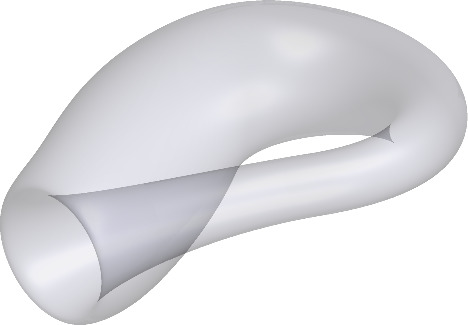
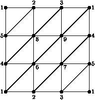
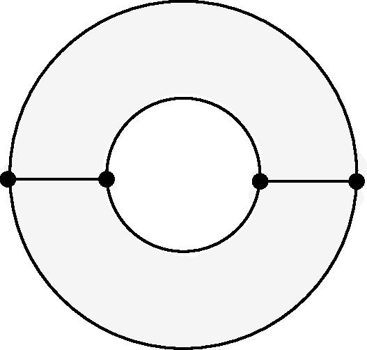

 
The following example constructs the Klein bottle as a simplicial complex \(K\) on \(9\) vertices, and then constructs the cellular chain complex \(C_\ast=C_\ast(K)\) from which the integral homology groups \(H_1(K,\mathbb Z)=\mathbb Z_2\oplus \mathbb Z\), \(H_2(K,\mathbb Z)=0\) are computed. The chain complex \(D_\ast=C_\ast \otimes_{\mathbb Z} \mathbb Z_2\) is also constructed and used to compute the mod-\(2\) homology vector spaces \(H_1(K,\mathbb Z_2)=\mathbb Z_2\oplus \mathbb Z_2\), \(H_2(K,\mathbb Z)=\mathbb Z_2\). Finally, a presentation \(\pi_1(K) = \langle x,y : yxy^{-1}x\rangle\) is computed for the fundamental group of \(K\).
gap> 2simplices:= > [[1,2,5], [2,5,8], [2,3,8], [3,8,9], [1,3,9], [1,4,9], > [4,5,8], [4,6,8], [6,8,9], [6,7,9], [4,7,9], [4,5,7], > [1,4,6], [1,2,6], [2,6,7], [2,3,7], [3,5,7], [1,3,5]];; gap> K:=SimplicialComplex(2simplices); Simplicial complex of dimension 2. gap> C:=ChainComplex(K); Chain complex of length 2 in characteristic 0 . gap> Homology(C,1); [ 2, 0 ] gap> Homology(C,2); [ ] gap> D:=TensorWithIntegersModP(C,2); Chain complex of length 2 in characteristic 2 . gap> Homology(D,1); 2 gap> Homology(D,2); 1 gap> G:=FundamentalGroup(K); <fp group of size infinity on the generators [ f1, f2 ]> gap> RelatorsOfFpGroup(G); [ f2*f1*f2^-1*f1 ]
Given a group \(G \) one can consider the partially ordered set \({\cal A}_p(G)\) of all non-trivial elementary abelian \(p\)-subgroups of \(G\), the partial order being set inclusion. The order complex \(\Delta{\cal A}_p(G)\) is a simplicial complex which is called the Quillen complex .
The following example constructs the Quillen complex \(\Delta{\cal A}_2(S_7)\) for the symmetric group of degree \(7\) and \(p=2\). This simplicial complex involves \(11291\) simplices, of which \(4410\) are \(2\)-simplices..
gap> K:=QuillenComplex(SymmetricGroup(7),2); Simplicial complex of dimension 2. gap> Size(K); 11291 gap> K!.nrSimplices(2); 4410
Any simplicial complex \(K\) can be regarded as a regular CW complex. Different datatypes are used in HAP for these two notions. The following continuation of the above Quillen complex example constructs a regular CW complex \(Y\) isomorphic to (i.e. with the same face lattice as) \(K=\Delta{\cal A}_2(S_7)\). An advantage to working in the category of CW complexes is that it may be possible to find a CW complex \(X\) homotopy equivalent to \(Y\) but with fewer cells than \(Y\). The cellular chain complex \(C_\ast(X)\) of such a CW complex \(X\) is computed by the following commands. From the number of free generators of \(C_\ast(X)\), which correspond to the cells of \(X\), we see that there is a single \(0\)-cell and \(160\) \(2\)-cells. Thus the Quillen complex $$\Delta{\cal A}_2(S_7) \simeq \bigvee_{1\le i\le 160} S^2$$ has the homotopy type of a wedge of \(160\) \(2\)-spheres. This homotopy equivalence is given in [Kso00, (15.1)] where it was obtained by purely theoretical methods.
gap> Y:=RegularCWComplex(K); Regular CW-complex of dimension 2 gap> C:=ChainComplex(Y); Chain complex of length 2 in characteristic 0 . gap> C!.dimension(0); 1 gap> C!.dimension(1); 0 gap> C!.dimension(2); 160
Note that for regular CW complexes \(Y\) the function ChainComplex(Y) returns the cellular chain complex \(C_\ast(X)\) of a (typically non-regular) CW complex \(X\) homotopy equivalent to \(Y\). The cellular chain complex \(C_\ast(Y)\) of \(Y\) itself can be obtained as follows.
gap> CC:=ChainComplexOfRegularCWComplex(Y); Chain complex of length 2 in characteristic 0 . gap> CC!.dimension(0); 1316 gap> CC!.dimension(1); 5565 gap> CC!.dimension(2); 4410

The following example begins by creating a \(2\)-dimensional annulus \(A\) as a regular CW-complex, and testing that it has the correct integral homology \(H_0(A,\mathbb Z)=\mathbb Z\), \(H_1(A,\mathbb Z)=\mathbb Z\), \(H_2(A,\mathbb Z)=0\).
gap> FL:=[];; #The face lattice gap> FL[1]:=[[1,0],[1,0],[1,0],[1,0]];; gap> FL[2]:=[[2,1,2],[2,3,4],[2,1,4],[2,2,3],[2,1,4],[2,2,3]];; gap> FL[3]:=[[4,1,2,3,4],[4,1,2,5,6]];; gap> FL[4]:=[];; gap> A:=RegularCWComplex(FL); Regular CW-complex of dimension 2 gap> Homology(A,0); [ 0 ] gap> Homology(A,1); [ 0 ] gap> Homology(A,2); [ ]
Next we construct the direct product \(Y=A\times A\times A\times A\times A\) of five copies of the annulus. This is a \(10\)-dimensional CW complex involving \(248832\) cells. It will be homotopy equivalent \(Y\simeq X\) to a CW complex \(X\) involving fewer cells. The CW complex \(X\) may be non-regular. We compute the cochain complex \(D_\ast = {\rm Hom}_{\mathbb Z}(C_\ast(X),\mathbb Z)\) from which the cohomology groups
\(H^0(Y,\mathbb Z)=\mathbb Z\),
\(H^1(Y,\mathbb Z)=\mathbb Z^5\),
\(H^2(Y,\mathbb Z)=\mathbb Z^{10}\),
\(H^3(Y,\mathbb Z)=\mathbb Z^{10}\),
\(H^4(Y,\mathbb Z)=\mathbb Z^5\),
\(H^5(Y,\mathbb Z)=\mathbb Z\),
\(H^6(Y,\mathbb Z)=0\)
are obtained.
gap> Y:=DirectProduct(A,A,A,A,A); Regular CW-complex of dimension 10 gap> Size(Y); 248832 gap> C:=ChainComplex(Y); Chain complex of length 10 in characteristic 0 . gap> D:=HomToIntegers(C); Cochain complex of length 10 in characteristic 0 . gap> Cohomology(D,0); [ 0 ] gap> Cohomology(D,1); [ 0, 0, 0, 0, 0 ] gap> Cohomology(D,2); [ 0, 0, 0, 0, 0, 0, 0, 0, 0, 0 ] gap> Cohomology(D,3); [ 0, 0, 0, 0, 0, 0, 0, 0, 0, 0 ] gap> Cohomology(D,4); [ 0, 0, 0, 0, 0 ] gap> Cohomology(D,5); [ 0 ] gap> Cohomology(D,6); [ ]
Continuing with the previous example, we consider the first and fifth generators \(g_1^1, g_5^1\in H^1(W,\mathbb Z) =\mathbb Z^5\) and establish that their cup product \( g_1^1 \cup g_5^1 = - g_7^2 \in H^2(W,\mathbb Z) =\mathbb Z^{10}\) is equal to minus the seventh generator of \(H^2(W,\mathbb Z)\). We also verify that \(g_5^1\cup g_1^1 = - g_1^1 \cup g_5^1\).
gap> cup11:=CupProduct(FundamentalGroup(Y)); function( a, b ) ... end gap> cup11([1,0,0,0,0],[0,0,0,0,1]); [ 0, 0, 0, 0, 0, 0, -1, 0, 0, 0 ] gap> cup11([0,0,0,0,1],[1,0,0,0,0]); [ 0, 0, 0, 0, 0, 0, 1, 0, 0, 0 ]
This computation of low-dimensional cup products is achieved using group-theoretic methods to approximate the diagonal map \(\Delta \colon Y \rightarrow Y\times Y\) in dimensions \(\le 2\). In order to construct cup products in higher degrees HAP requires a cellular inclusion \(\overline Y \hookrightarrow Y\times Y\) with projection \(p\colon \overline Y \twoheadrightarrow Y\) that induces isomorphisms on integral homology. The function DiagonalApproximation(Y) constructs a candidate inclusion, but the projection \(p\colon \overline Y \twoheadrightarrow Y\) needs to be tested for homology equivalence. If the candidate inclusion passes this test then the function CupProduct(Y), involving the candidate space, can be used for cup products.
The following example calculates \(g_3^3 \cup g_3^1 = g_1^4\) where \(W=S\times S\times S\times S\) is the direct product of four circles, and where \(g_k^n\) denotes the \(k\)-th generator of \(H^n(W,\mathbb Z)\).
gap> S:=SimplicialComplex([[1,2],[2,3],[1,3]]);; gap> S:=RegularCWComplex(S);; gap> W:=DirectProduct(S,S,S,S);; gap> cup:=CupProduct(W); function( p, q, vv, ww ) ... end gap> cup(3,1,[0,0,1,0],[0,0,1,0]); [ 1 ] #Now test that the diagonal construction is valid. gap> D:=DiagonalApproximation(W);; gap> p:=D!.projection; Map of regular CW-complexes gap> P:=ChainMap(p); Chain Map between complexes of length 4 . gap> IsIsomorphismOfAbelianFpGroups(Homology(P,0)); true gap> IsIsomorphismOfAbelianFpGroups(Homology(P,1)); true gap> IsIsomorphismOfAbelianFpGroups(Homology(P,2)); true gap> IsIsomorphismOfAbelianFpGroups(Homology(P,3)); true gap> IsIsomorphismOfAbelianFpGroups(Homology(P,4)); true
A strictly cellular map \(f\colon X\rightarrow Y\) of regular CW-complexes is a cellular map for which the image of any cell is a cell (of possibly lower dimension). Inclusions of CW-subcomplexes, and projections from a direct product to a factor, are examples of such maps. Strictly cellular maps can be represented in HAP, and their induced homomorphisms on (co)homology and on fundamental groups can be computed.
The following example begins by visualizing the trefoil knot \(\kappa \in \mathbb R^3\). It then constructs a regular CW structure on the complement \(Y= D^3\setminus {\rm Nbhd}(\kappa) \) of a small tubular open neighbourhood of the knot lying inside a large closed ball \(D^3\). The boundary of this tubular neighbourhood is a \(2\)-dimensional CW-complex \(B\) homeomorphic to a torus \(\mathbb S^1\times \mathbb S^1\) with fundamental group \(\pi_1(B)=<a,b\, :\, aba^{-1}b^{-1}=1>\). The inclusion map \(f\colon B\hookrightarrow Y\) is constructed. Then a presentation \(\pi_1(Y)= <x,y\, |\, xy^{-1}x^{-1}yx^{-1}y^{-1}>\) and the induced homomorphism $$\pi_1(B)\rightarrow \pi_1(Y), a\mapsto y^{-1}xy^2xy^{-1}, b\mapsto y $$ are computed. This induced homomorphism is an example of a peripheral system and is known to contain sufficient information to characterize the knot up to ambient isotopy.
Finally, it is verified that the induced homology homomorphism \(H_2(B,\mathbb Z) \rightarrow H_2(Y,\mathbb Z)\) is an isomomorphism.
gap> K:=PureCubicalKnot(3,1);; gap> ViewPureCubicalKnot(K);;
gap> K:=PureCubicalKnot(3,1);; gap> f:=KnotComplementWithBoundary(ArcPresentation(K)); Map of regular CW-complexes gap> G:=FundamentalGroup(Target(f)); <fp group of size infinity on the generators [ f1, f2 ]> gap> RelatorsOfFpGroup(G); [ f1*f2^-1*f1^-1*f2*f1^-1*f2^-1 ] gap> F:=FundamentalGroup(f); [ f1, f2 ] -> [ f2^-1*f1*f2^2*f1*f2^-1, f1 ] gap> phi:=ChainMap(f); Chain Map between complexes of length 2 . gap> H:=Homology(phi,2); [ g1 ] -> [ g1 ]
generated by GAPDoc2HTML